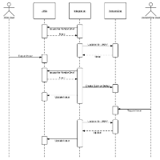
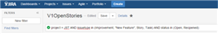
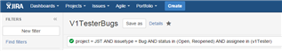
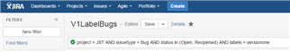
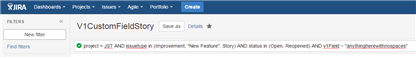
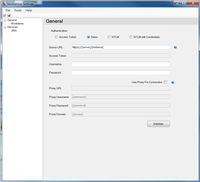
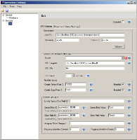

VersionOne Integration for JIRA
Introduction
The VersionOne Integration for JIRA creates stories and defects in VersionOne based on issues found in JIRA. Using this integration, your organization can manage and triage issues reported by customers and promote them to VersionOne.
Contents
Description
JIRA is an Atlassian product for issue tracking, commonly used for both defect and issue tracking. As an issue tracking system, JIRA helps quality assurance and programmers keep track of reported software bugs in their work. JIRA also allows users to enter bug reports directly (depending on configuration) although it is often used only internally in a company or organization doing software development. As an issue tracking system, JIRA manages the broader notion of issues needed by an organization. In this context, JIRA may be used in an organization's customer support call center to create, update, and resolve reported customer issues, or even issues reported by that organization's other employees.
For agile development teams using JIRA and VersionOne, who need to integrate their issue management with agile project management, the VersionOne Integration fir JIRA is a bridge that transfers issues in JIRA into defects or stories in VersionOne. The integration creates defects or stories in VersionOne based on issues in JIRA. Using this integration, your organization can manage and triage issues reported by customers and promote them to VersionOne for prioritization, estimation, planning, and implementation once you determine development work is necessary. When the work is completed in VersionOne, the integration updates JIRA to reflect this change.
Once the integration is installed and configured, JIRA users can specify which issues require engineering attention and they will automatically appear as stories or defects in VersionOne. Additionally, when the story or defect is closed in VersionOne, the integration updates the JIRA issue to reflect this change. JIRA issues that require engineering attention are identified using filters.
The following sequence diagram illustrates how the integration interacts with
JIRA and VersionOne.

System Requirements
- VersionOne:
- Tested with VersionOne 14.2.2.6056. Expected to work with any version higher than 7.3.
- Compatible with all VersionOne Editions.
- Compatible with all Methodology choices.
- VersionOne Authentication or Windows Integrated Authentication. (Does not work with other forms of SSO.)
- A member with Team Member role, or higher, on integrated projects.
- Atlassian JIRA:
- Tested with 6.4.3. Expected to work with any version higher than 5.2.
- Integration Server Operating System:
- Tested with Windows Server 2012. Expected to work with Windows Server 2008 or higher, provided the required version of .NET Framework can be installed (see below)
- Tested with .NET Framework 4.5. Expected to work with any subsequent version.
- Bi-directional network access between this Integration and JIRA. This usually means TCP/IP port 443 for https.
- Bi-directional network access between this Integration and VersionOne. This usually means TCP/IP port 443 for https.
Installation
These installation instructions assume that JIRA is already installed, configured, and working properly.
- Determine Install Location
The integration can be installed on any server with network access to both VersionOne and JIRA. Exact placement should be determined by your internal software management requirements. The integration server must meet the System Requirements stated above.
- Extract Files
Download the integration using the link above and extract it into a folder of your choice.
- Configure
Configuration for the JIRA Integration is a 3 step process.
- Configure JIRA
- Configure VersionOne
- Configure Integration
Configuration
Configure JIRA
This section describes how to modify your JIRA instance for use with VersionOne. Before you begin you need decide if you want to Assign or Tag the JIRA Issues you want visible in VersionOne.
- Select or Create a JIRA User.
The integration requires a valid JIRA User ID and a Password in order to connect. This user must have sufficient rights to accept work and modify issues (i.e. must be assigned to the Developer Role on the project). This user must also have rights to the actions being performed by the integration (for example, the user must have rights to Close Issues). The default value in configuration is username "remote" and password "remote" but these can be changed to suit your needs.
Although the integration does not require administrator access to run, there are some validation rules that can only be checked with a JIRA administrator role. To help check first-time configuration, the recommended approach is to elevate the integration user to Administrator. After the integration has been verified (start the integration in the below steps) and before starting as a service (install as Windows Service in the below steps), reduce the JIRA access to Developer Role. Then you can safely ignore log warnings about validation rules that require administrator access.
- Create Filters for Defect and Story
These filters must be available through the credentials used by the integration; hence, it is recommended that you create these filters using the same credentials to avoid the complexity of shared filters.
The results of a JIRA filter are used to determine which JIRA issues will be transferred to VersionOne. By using a JIRA filter, you can make the integration fit with your existing JIRA workflow and fields. The details of writing such a filter are beyond the scope of this document. However, the following are some simple examples.
- Type and Status Filter
The simplest filter is to move all JIRA Issues of a certain type and state to VersionOne.
 - Assigned User or Label Filter
If only a subset of JIRA Issues of a type and status should be moved, then you may want to create a filter that transfers all JIRA Issues that are associated with the remote user, or you may want to create a filter that transfers all JIRA Issues that are labeled with "versionone".

 - Custom Field or Combination
If the JIRA fields above would conflict with existing workflow, you may want to create a custom field and use it as part of the filter.

- Type and Status Filter
- Do you need a custom field to hold a URL to the VersionOne
Asset?
By default the integration puts the VersionOne defect information in the "Comments" section of the Issue. This information includes a URL to the VersionOne asset. You may optionally add another field to hold this data necessary. To do this create the custom field and note the 'fieldId' value. This value is available to the JIRA Administrator. From the "View Custom Fields" page, select the "Screens" link under the settings "Cog" for the desired custom field. In the URL, note the 'fieldId' value.


Configure VersionOne
Skip this step if you are configuring a VersionOne Team Edition instance.
- Add "JIRA" to the list of valid Source:

- Determine where to store the JIRA ID
The integration needs a text field in VersionOne to store the JIRA identifier. By default this is the Reference field. If you are already using this field, you'll need to create a custom text field and note the name.

Configure the Integration
To configure the JIRA integration you need to run the ServiceHost
configuration tool:
ServiceHostConfigTool.exe
The following section describes how to configure your JIRA integration using the configuration tool.
- On the General tab specify your VersionOne connection
details
 The following table describes the fields on this tab:
Field Description Server URL This is the URL to your VersionOne server Username VersionOne user that will create defects Password Password for the specified user Use Windows Integrated Authentication Check this box if you VersionOne server is configured to use Windows Integrated Authentication If there's a proxy between this machine and the VersionOne instance, you'll also need to configure the following settings:
Field Description Use Proxy For Connection Determines if the integration tries to connect through a Proxy Proxy URL This is the URL to your Proxy Server Proxy Username The username that will get you past this proxy Proxy Password The password for the Proxy Username Proxy Domain Name of Proxy Domain - Once the VersionOne parameters are specified, press Verify button to continue.
- In the Workitems section, specify the VersionOne field that
will hold the JIRA ID.

The following table describes the fields on this tab:
Field Description Reference Field Name Defect field used to hold JIRA ID. By default this is the Reference field. Disabled Check this box to disable polling VersionOne for defect updates. - On the JIRA tab specify your JIRA connection details
and the Issue transfer behavior.
- Configure the JIRA connection
Field Description Disabled Check this box if you want to disable polling JIRA for new Issues JIRA URL Fully qualified URL to your JIRA instance Don't forget /rpc/soap/jirasoapservice-v2 .
Username Valid JIRA user. This user must be able to see and update Issues in the appropriate projects. Password Password for specified user. - Click Verify to ensure the connection parameters are correct.
- Configure VersionOne Workitem attributes
Field Description Source Select the VersionOne source value to use for JIRA.
VersionOne Team Edition contains a Source value of "External System".
URL Template Template for URL to access specific Issue in JIRA. #key# is replaced with the JIRA Issue ID. This field is used to create links from VersionOne to JIRA URL Title This field is the Link title in VersionOne. - Configure Poll Interval
Field Description Poll Interval Determines how frequently the integration polls JIRA looking for issues. - Configure Find Jira Issues
Field Description Create Defect Filter ID JIRA identifier for the filter used to determine which issues are pushed to VersionOne as defects. Create Story Filter ID JIRA identifier for the filter used to determine which issues are pushed to VersionOne as stories. - Configure Update Jira Issue
Field Description Link to VersionOne Field ID Custom field in JIRA used to hold VersionOne URL. If blank, the URL will be created in the comments. Create Field ID Name of the JIRA Custom Field to update after a defect is created in VersionOne. Create Field Value Value to set in "Create Field ID" after a defect is created in VersionOne. Close Field ID Name of the JIRA custom field to update after a the VersionOne defect is closed. Close Field Value Value to set in "Closed Field ID" after a the VersionOne defect is closed. Assignee State Changed The name of the JIRA user to assign the issue once it's closed in VersionOne. A value of -1 will cause JIRA to set the assignee based on workflow rules. Progress Workflow Created The JIRA Workflow Transition ID to set once it's created in VersionOne. Progress Workflow Closed The JIRA Workflow Transition ID to set once it's closed in VersionOne.
- Configure the JIRA connection
- Map your Projects
Project Mapping allows you to specify where defects are created in VersionOne. The algorithm for selecting a project is as follows: First, the integration looks for the JIRA Project Name in the map. If it exists, the defect is created in the corresponding VersionOne Project. If the JIRA Project Name is not found, the integration attempts to find a VersionOne Project with the same name. If found, the integration creates the defect in the VersionOne project with a matching name. If it cannot find a VersionOne project with a name that matches the JIRA Project, the integration will create the defect in the root level node of the VersionOne Project tree or in the first Project in the list if there are multiple top level nodes.

To add a Project mapping you need to do the following:
- Click on the Project and Priority Mapping tab
- In the Project Mapping grid, select a VersionOne Project value from the dropdown
- Supply the corresponding JIRA Project name.
To remove a mapping: - Select the desired row.
- Click the Delete current row button
- Map your Priority Values
Priority mapping allows you to configure how the VersionOne defect priority value is set based on the JIRA Priority value. The algorithm for mapping is simple, if the JIRA Priority value is in the mapping, the VersionOne defect value is set to the mapped value. If the JIRA Priority value is not found, the VersionOne defect value is not set.
To add a Priority mapping you need to do the following:
- Click on the Project and Priority Mapping tab
- In the Priority Mappings grid, select a VersionOne Priority value from the dropdown
- Supply the corresponding JIRA Project value name.
To remove a mapping: - Select the desired row.
- Click the Delete current row button
- Save your changes and exit the program


{kind=link}
{kind=link}
{kind=link}
{kind=link}
{kind=link}
{kind=link}
{kind=link}
Integration
- Start the Integration
Open up the command prompt, navigate to your installation folder, and run the following command:
VersionOne.ServiceHost.exeIf you have configured your system properly, you should see several [Info] messages followed by a [Startup] message.
- Test the integration
To ensure the integration is working, perform the following steps:
- Create an Issue in JIRA
- Set the appropriate state in order for the issue to move to VersionOne
- Verify that the issue appears in VersionOne as a defect
- Close the defect in VersionOne
- Verify that the JIRA Issue has been updated as expected
- Shut down the service host by pressing "Q" in the console window.
- Install as a Windows Service
Run the following command from the console window:
VersionOne.ServiceHost.exe --installThis command installs the service so it will will run under the account NT AUTHORITY\Local Service. Local Service must be given access privileges to the directory where the the integration executable was installed so it can store its state and write to log files. Follow the steps below to change the security on the installation directory:
- Right click the installation folder from Windows Explorer.
- Select "properties".
- Select the "Security" tab.
- Click the "Add" button.
- Enter "Local Service" and click "OK".
- Click the "Allow" checkbox for the "Full Control" row .
- Click "OK" to save the changes.